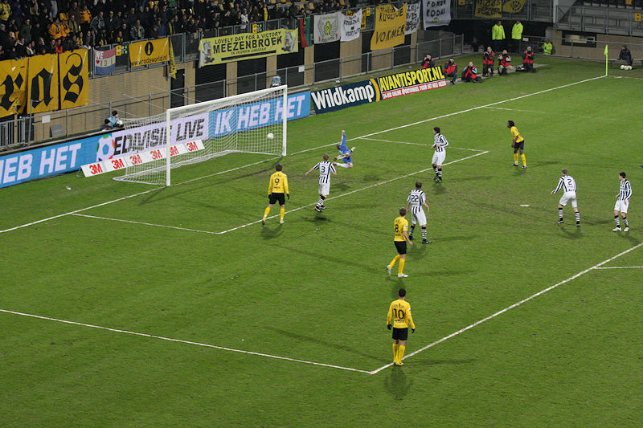
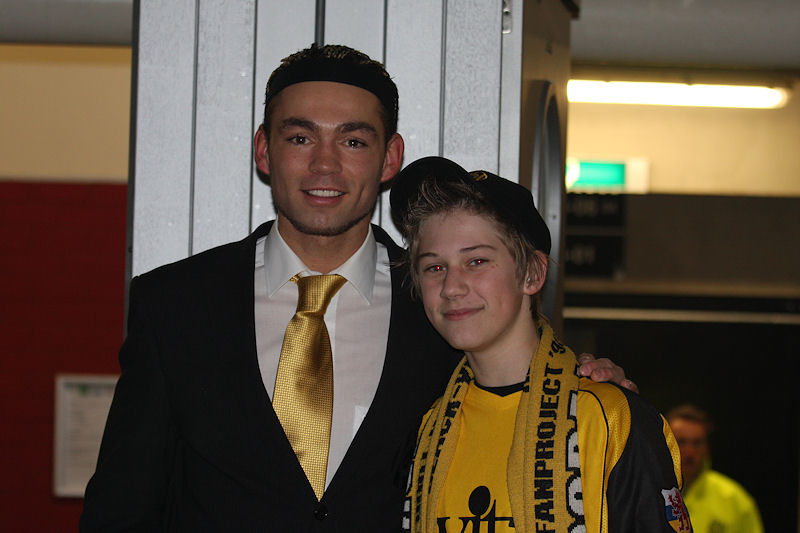

Sfeer op de west-tribune.
Everton kopt een corner van Vejinovic binnen: 0-1, (8').
Feest bij de 20 meegereisde Heracles-supporters.
Matondo al na 10 minuten ingebracht voor Delorge die toch nog te veel last
heeft van zijn blessure.
Everton gemangeld tussen Vormer en De Jong.
Saeijs in duel met Vejinovic.
Roda speelt slordig en krijgt nauwelijks grip op het goed georganiseerde
Heracles dat compact speelt. Niettemin creëert de club van
trainer Verbeek weinig kansen en wordt Roda naarmate de rust dichterbij komt
dreigender.
De Jong in duel met Douglas.
Matondo met een heerlijke omhaal.
Schot van De Fauw...

... treffer! 1-1, (75').
Breukers haalt Hadouir onderuit in de zestien: penalty!
Hadouir neemt de pingel zelf en schiet de bal hoog over het doel van
Pieckenhagen.
Pieckenhagen staat met de benen uit elkaar...
.. waartussen De Jong de bal perfect binnenschuift: 2-1, (88').
De ontlading bij de spelers is gigantisch.
In de slotfase is het nog even billen knijpen, zeker wanneer Pieckenhagen
mee naar voren komt.

De doelman van Heracles komt nog éénmaal mee naar voren.
Game over! Roda behaalt drie uiterst kostbare punten!
De vreugde is groot en Vormer maakt er een virtuele foto van.
Bedankjes volgen aan zuid, west en oost. Ongekend!
Opa John met kleinkinderen in de Kickoff.
Vrolijke gasten.
Gazza met dochter op de foto met Matondo.

Vandamme was ook present, evenals De Wree en Castro.
Jamaïcque liet weten weer helemaal terug te zijn maar niet in het spelbeeld
van Van Veldhoven te passen. Een goed verstaander heeft hier
genoeg aan...